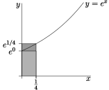
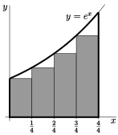
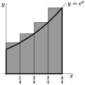

Example 1.1.1. Computing an area with vertical strips.
We wish to compute the area of \(\big\{\ (x,y)\ \big|\ 0\le y\le e^x\text{,}\) \(0\le x\le 1\ \big\}\text{.}\) We know, from our experience with \(e^x\) in differential calculus, that the curve \(y=e^x\) is not easily written in terms of other simpler functions, so it is very unlikely that we would be able to write the area as a combination of simpler geometric objects such as triangles, rectangles or circles.
So rather than trying to write down the area exactly, our strategy is to approximate the area and then make our approximation more and more precise . We choose to approximate the area as a union of a large number of tall thin (vertical) rectangles. As we take more and more rectangles we get better and better approximations. Taking the limit as the number of rectangles goes to infinity gives the exact area .
1
This should remind the reader of the approach taken to compute the slope of a tangent line way way back at the start of differential calculus.
2
Approximating the area in this way leads to a definition of integration that is called Riemann integration. This is the most commonly used approach to integration. However we could also approximate the area by using long thin horizontal strips. This leads to a definition of integration that is called Lebesgue integration. We will not be covering Lebesgue integration in these notes.
3
If we want to be more careful here, we should construct two approximations, one that is always a little smaller than the desired area and one that is a little larger. We can then take a limit using the Squeeze Theorem and arrive at the exact area. More on this later.
As a warm up exercise, we’ll now just use four rectangles. In Example 1.1.2, below, we’ll consider an arbitrary number of rectangles and then take the limit as the number of rectangles goes to infinity. So
-
subdivide the interval \(0\le x\le 1\) into \(4\) equal subintervals each of width \(\frac{1}{4}\text{,}\) and
-
subdivide the area of interest into four corresponding vertical strips, as in the figure below.
The area we want is exactly the sum of the areas of all four strips.
Each of these strips is almost, but not quite, a rectangle. While the bottom and sides are fine (the sides are at right-angles to the base), the top of the strip is not horizontal. This is where we must start to approximate. We can replace each strip by a rectangle by just levelling off the top. But now we have to make a choice — at what height do we level off the top?
Consider, for example, the leftmost strip. On this strip, \(x\) runs from \(0\) to \(\frac{1}{4}\text{.}\) As \(x\) runs from \(0\) to \(\frac{1}{4}\text{,}\) the height \(y\) runs from \(e^0\) to \(e^{\frac{1}{4}}\text{.}\) It would be reasonable to choose the height of the approximating rectangle to be somewhere between \(e^0\) and \(e^{\frac{1}{4}}\text{.}\) Which

height should we choose? Well, actually it doesn’t matter. When we eventually take the limit of infinitely many approximating rectangles all of those different choices give exactly the same final answer. We’ll say more about this later.
In this example we’ll do two sample computations.
-
For the first computation we approximate each slice by a rectangle whose height is the height of the left hand side of the slice.
-
On the first slice, \(x\) runs from \(0\) to \(\frac{1}{4}\text{,}\) and the height \(y\) runs from \(e^0\text{,}\) on the left hand side, to \(e^{\frac{1}{4}}\text{,}\) on the right hand side.
-
So we approximate the first slice by the rectangle of height \(e^0\) and width \(\frac{1}{4}\text{,}\) and hence of area \(\frac{1}{4}\,e^0 =\frac{1}{4}\text{.}\)
-
On the second slice, \(x\) runs from \(\frac{1}{4}\) to \(\frac{1}{2}\text{,}\) and the height \(y\) runs from \(e^{\frac{1}{4}}\) and \(e^{\frac{1}{2}}\text{.}\)
-
So we approximate the second slice by the rectangle of height \(e^{\frac{1}{4}}\) and width \(\frac{1}{4}\text{,}\) and hence of area \(\frac{1}{4}\,e^{\frac{1}{4}}\text{.}\)
-
And so on.
-
All together, we approximate the area of interest by the sum of the areas of the four approximating rectangles, which is\begin{gather*} \big[1+ e^{\frac{1}{4}} + e^{\frac{1}{2}} +e^{\frac{3}{4}}\big]\frac{1}{4} =1.5124 \end{gather*}
-
This particular approximation is called the “left Riemann sum approximation to \(\int_0^1 e^x\dee{x}\) with \(4\) subintervals”. We’ll explain this terminology later.
-
This particular approximation represents the shaded area in the figure on the left below. Note that, because \(e^x\) increases as \(x\) increases, this approximation is definitely smaller than the true area.
-


-
For the second computation we approximate each slice by a rectangle whose height is the height of the right hand side of the slice.
-
On the first slice, \(x\) runs from \(0\) to \(\frac{1}{4}\text{,}\) and the height \(y\) runs from \(e^0\text{,}\) on the left hand side, to \(e^{\frac{1}{4}}\text{,}\) on the right hand side.
-
So we approximate the first slice by the rectangle of height \(e^{\frac{1}{4}}\) and width \(\frac{1}{4}\text{,}\) and hence of area \(\frac{1}{4}\,e^{\frac{1}{4}}\text{.}\)
-
On the second slice, \(x\) runs from \(\frac{1}{4}\) to \(\frac{1}{2}\text{,}\) and the height \(y\) runs from \(e^{\frac{1}{4}}\) and \(e^{\frac{1}{2}}\text{.}\)
-
So we approximate the second slice by the rectangle of height \(e^{\frac{1}{2}}\) and width \(\frac{1}{4}\text{,}\) and hence of area \(\frac{1}{4}\,e^{\frac{1}{2}}\text{.}\)
-
And so on.
-
All together, we approximate the area of interest by the sum of the areas of the four approximating rectangles, which is\begin{gather*} \big[e^{\frac{1}{4}} + e^{\frac{1}{2}} +e^{\frac{3}{4}}+e^1\big]\frac{1}{4} =1.9420 \end{gather*}
-
This particular approximation is called the “right Riemann sum approximation to \(\int_0^1 e^x\dee{x}\) with \(4\) subintervals”.
-
This particular approximation represents the shaded area in the figure on the right above. Note that, because \(e^x\) increases as \(x\) increases, this approximation is definitely larger than the true area.
-